Code
var <- read.csv("https://raw.githubusercontent.com/beduExpert/Programacion-R-Santander-2022/main/Sesion-03/Data/variables.csv")A nivel estadístico, existen dos tipos de variables con distintas escalas de medición: - Cualitativas: Aquellas que describen una cualidad de la observación - Nominales: El orden de la cualidad no es importante - Ordinales: El orden de la cualidad sí es importante
Es importante identificar correctamente el tipo de variable y su escala de medición, ya que con base en ello aplicaremos cierto tipo de técnicas y herramientas estadísticas.
Veamos la estadística descriptiva de las siguientes variables. ¿Tiene sentido?
var <- read.csv("https://raw.githubusercontent.com/beduExpert/Programacion-R-Santander-2022/main/Sesion-03/Data/variables.csv")Muestra de los datos que hay en el data frame
str(var)'data.frame': 12 obs. of 8 variables:
$ EDAD : int 28 31 27 32 35 29 30 30 29 33 ...
$ SEXO : chr "M" "M" "F" "M" ...
$ ESTUDIOS : chr "Bachillerato" "Licenciatura" "Bachillerato" "Bachillerato" ...
$ INGRESO : num 2702 2066 1992 2059 2366 ...
$ NIVEL_SOCIOECO: chr "Medio" "Medio" "Alto" "Medio" ...
$ MEDIO_CONTACTO: chr "Correo" "Redes" "Redes" "Redes" ...
$ NO_HIJOS : int 1 2 3 2 0 2 0 3 0 2 ...
$ ACTIVO : int 0 0 1 0 1 1 1 1 0 1 ...summary(var) EDAD SEXO ESTUDIOS INGRESO
Min. :27.00 Length:12 Length:12 Min. :1810
1st Qu.:28.75 Class :character Class :character 1st Qu.:2064
Median :30.00 Mode :character Mode :character Median :2474
Mean :30.17 Mean :2412
3rd Qu.:31.25 3rd Qu.:2691
Max. :35.00 Max. :2969
NIVEL_SOCIOECO MEDIO_CONTACTO NO_HIJOS ACTIVO
Length:12 Length:12 Min. :0.000 Min. :0.0000
Class :character Class :character 1st Qu.:0.750 1st Qu.:0.0000
Mode :character Mode :character Median :2.000 Median :1.0000
Mean :1.583 Mean :0.5833
3rd Qu.:2.250 3rd Qu.:1.0000
Max. :3.000 Max. :1.0000 Vamos a transformar las variables a su tipo y escala correspondiente
var$SEXO <- factor(var$SEXO)
var$ESTUDIOS <- factor(var$ESTUDIOS, levels = c("Primaria", "Bachillerato", "Licenciatura", "Maestria"), ordered = TRUE)
var$NIVEL_SOCIOECO <- factor(var$NIVEL_SOCIOECO, levels = c("Bajo", "Medio", "Alto"), ordered = TRUE)
var$MEDIO_CONTACTO <- factor(var$MEDIO_CONTACTO)
var$ACTIVO <- factor(var$ACTIVO, labels = c("No", "Si"))
summary(var) EDAD SEXO ESTUDIOS INGRESO NIVEL_SOCIOECO
Min. :27.00 F:6 Primaria :2 Min. :1810 Bajo :3
1st Qu.:28.75 M:6 Bachillerato:4 1st Qu.:2064 Medio:6
Median :30.00 Licenciatura:4 Median :2474 Alto :3
Mean :30.17 Maestria :2 Mean :2412
3rd Qu.:31.25 3rd Qu.:2691
Max. :35.00 Max. :2969
MEDIO_CONTACTO NO_HIJOS ACTIVO
Correo:4 Min. :0.000 No:5
Redes :4 1st Qu.:0.750 Si:7
WA :4 Median :2.000
Mean :1.583
3rd Qu.:2.250
Max. :3.000 El objetivo principal de la estadística descriptiva, es presentar, de forma sintetizada, la información para su correcto análisis.
Vamos a comenzar con métodos tabulares para presentar un resumen de la información:
freq <- table(var$ESTUDIOS)freq2 <- transform(freq, rel.freq=prop.table(Freq))
freq2 Var1 Freq rel.freq
1 Primaria 2 0.1666667
2 Bachillerato 4 0.3333333
3 Licenciatura 4 0.3333333
4 Maestria 2 0.1666667ggplot(var, aes(x = ESTUDIOS)) + geom_bar()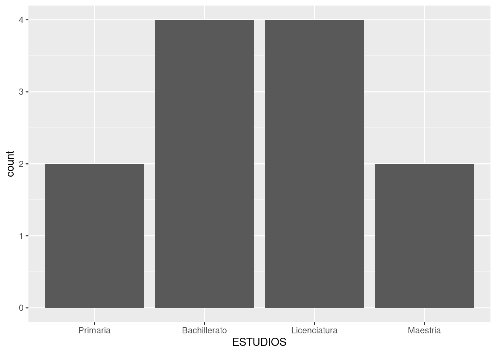
Hacer este mismo análisis para variables cuantitativas puede resultar en una tabla de frecuencias muy larga y poco informativa (¿por qué?). En su lugar, debemos realizar clases o intervalos con rangos específicos.
Vamos a comenzar por calcular el número de clases y el ancho de la clase:
k = ceiling(sqrt(length(var$INGRESO)))
k[1] 4ac = (max(var$INGRESO)-min(var$INGRESO))/k
ac[1] 289.825Ahora vamos a crear una secuencia que vaya del valor mínimo al máximo con el ancho de clase. Esto nos va a permitir hacer cortes con las clases correspondientes:
bins <- seq(min(var$INGRESO), max(var$INGRESO), by = ac)
bins[1] 1809.980 2099.805 2389.630 2679.455 2969.280ingreso.clases <- cut(var$INGRESO, breaks = bins, include.lowest=TRUE, dig.lab = 8)
ingreso.clases [1] (2679.455,2969.28] [1809.98,2099.805] [1809.98,2099.805] [1809.98,2099.805]
[5] (2099.805,2389.63] (2679.455,2969.28] [1809.98,2099.805] (2389.63,2679.455]
[9] (2679.455,2969.28] (2679.455,2969.28] (2389.63,2679.455] (2389.63,2679.455]
4 Levels: [1809.98,2099.805] (2099.805,2389.63] ... (2679.455,2969.28]Con esto, podemos crear nuestra tabla de distribución de frecuencias:
dist.freq <- table(ingreso.clases)
tablaFre1 <- transform(dist.freq,
rel.freq=prop.table(Freq),
cum.freq=cumsum(prop.table(Freq)))
tablaFre1 ingreso.clases Freq rel.freq cum.freq
1 [1809.98,2099.805] 4 0.33333333 0.3333333
2 (2099.805,2389.63] 1 0.08333333 0.4166667
3 (2389.63,2679.455] 3 0.25000000 0.6666667
4 (2679.455,2969.28] 4 0.33333333 1.0000000ingreso.clases <- cut(var$INGRESO, breaks = bins, include.lowest=TRUE, dig.lab = 8)
otraforma <- var %>%
mutate(intervalo = ingreso.clases) %>%
group_by(intervalo) %>%
summarise(freq = n()) %>%
mutate(rel_freq = freq/sum(freq))
otraforma# A tibble: 4 × 3
intervalo freq rel_freq
<fct> <int> <dbl>
1 [1809.98,2099.805] 4 0.333
2 (2099.805,2389.63] 1 0.0833
3 (2389.63,2679.455] 3 0.25
4 (2679.455,2969.28] 4 0.333 df <- read.csv("https://raw.githubusercontent.com/beduExpert/Programacion-R-Santander-2022/main/Sesion-03/Data/telecom_service.csv")
summary(df) international_plan voice_mail_plan number_vmail_messages total_day_minutes
Min. :0.00000 Min. :0.0000 Min. : 0.000 Min. : 0.0
1st Qu.:0.00000 1st Qu.:0.0000 1st Qu.: 0.000 1st Qu.:143.7
Median :0.00000 Median :0.0000 Median : 0.000 Median :179.4
Mean :0.09691 Mean :0.2766 Mean : 8.099 Mean :179.8
3rd Qu.:0.00000 3rd Qu.:1.0000 3rd Qu.:20.000 3rd Qu.:216.4
Max. :1.00000 Max. :1.0000 Max. :51.000 Max. :350.8
total_day_calls total_day_charge total_eve_minutes total_eve_calls
Min. : 0.0 Min. : 0.00 Min. : 0.0 Min. : 0.0
1st Qu.: 87.0 1st Qu.:24.43 1st Qu.:166.6 1st Qu.: 87.0
Median :101.0 Median :30.50 Median :201.4 Median :100.0
Mean :100.4 Mean :30.56 Mean :201.0 Mean :100.1
3rd Qu.:114.0 3rd Qu.:36.79 3rd Qu.:235.3 3rd Qu.:114.0
Max. :165.0 Max. :59.64 Max. :363.7 Max. :170.0
total_eve_charge total_night_minutes total_night_calls total_night_charge
Min. : 0.00 Min. : 23.2 Min. : 33.0 Min. : 1.040
1st Qu.:14.16 1st Qu.:167.0 1st Qu.: 87.0 1st Qu.: 7.520
Median :17.12 Median :201.2 Median :100.0 Median : 9.050
Mean :17.08 Mean :200.9 Mean :100.1 Mean : 9.039
3rd Qu.:20.00 3rd Qu.:235.3 3rd Qu.:113.0 3rd Qu.:10.590
Max. :30.91 Max. :395.0 Max. :175.0 Max. :17.770
total_intl_minutes total_intl_calls total_intl_charge customer_service_calls
Min. : 0.00 Min. : 0.000 Min. :0.000 Min. :0.000
1st Qu.: 8.50 1st Qu.: 3.000 1st Qu.:2.300 1st Qu.:1.000
Median :10.30 Median : 4.000 Median :2.780 Median :1.000
Mean :10.24 Mean : 4.479 Mean :2.765 Mean :1.563
3rd Qu.:12.10 3rd Qu.: 6.000 3rd Qu.:3.270 3rd Qu.:2.000
Max. :20.00 Max. :20.000 Max. :5.400 Max. :9.000
churn
Min. :0.0000
1st Qu.:0.0000
Median :0.0000
Mean :0.1449
3rd Qu.:0.0000
Max. :1.0000 # media
mean(df$total_day_calls)[1] 100.4356mean(df$total_day_calls, trim = 0.20)[1] 100.6157# mediana
median(df$total_day_calls)[1] 101# moda
Mode(df$total_day_calls)[1] 102
attr(,"freq")
[1] 78var(df$total_day_calls)[1] 402.7681sd(df$total_day_calls)[1] 20.06908Rango intercuartilico
IQR(df$total_day_calls) #Dispersión alrededor a la mediana[1] 27iqr = quantile(df$total_day_calls, probs = 0.75) - quantile(df$total_day_calls, probs = 0.25)
iqr75%
27 summary(df$total_day_calls) Min. 1st Qu. Median Mean 3rd Qu. Max.
0.0 87.0 101.0 100.4 114.0 165.0 CuaRtiles (Separan la distribución de los datos en 4 partes de 25% cada una) q1, q2 y q3 Deciles (Separan la distribución de los datos en 10 partes de 10% cada una) d1, d2, d3, d4, d5, d6, d7, d8, d9 Percentiles o centiles (Separan la distribución de los datos en 100 partes de 1% cada una) p1, p2, p3, … p10, … p20, …, p25, … , p50, p75, … p99
Equivalencias d1 = p10 (En general dk = p(k*10) para toda k = 1, … 9) q1 = p25 q2 = d5 = p50 (= mediana) q3 = p75
cuartiles <- quantile(df$total_day_calls, probs = c(0,0.25, 0.50, 0.75,1))
cuartiles 0% 25% 50% 75% 100%
0 87 101 114 165 deciles <- quantile(df$total_day_calls, probs = c(0.1,0.2,0.3,0.4,0.5,0.6,0.7,0.8,0.9,1))
deciles 10% 20% 30% 40% 50% 60% 70% 80% 90% 100%
74.2 84.0 90.0 96.0 101.0 106.0 111.0 117.0 126.0 165.0 percentiles <- quantile(df$total_day_calls, probs = seq(0.01,1, by=0.01))
percentiles 1% 2% 3% 4% 5% 6% 7% 8% 9% 10% 11%
54.00 59.00 62.00 65.00 67.00 69.00 70.00 72.00 73.00 74.20 76.00
12% 13% 14% 15% 16% 17% 18% 19% 20% 21% 22%
77.00 78.00 79.00 80.00 80.00 81.00 82.00 83.00 84.00 85.00 85.00
23% 24% 25% 26% 27% 28% 29% 30% 31% 32% 33%
86.00 87.00 87.00 88.00 88.00 89.00 90.00 90.00 91.00 91.00 92.00
34% 35% 36% 37% 38% 39% 40% 41% 42% 43% 44%
92.00 93.00 93.52 94.00 95.00 95.00 96.00 96.00 97.00 97.00 98.00
45% 46% 47% 48% 49% 50% 51% 52% 53% 54% 55%
98.00 99.00 99.00 100.00 100.00 101.00 101.00 102.00 102.00 103.00 103.00
56% 57% 58% 59% 60% 61% 62% 63% 64% 65% 66%
104.00 104.00 105.00 105.00 106.00 106.00 107.00 107.00 108.00 108.00 109.00
67% 68% 69% 70% 71% 72% 73% 74% 75% 76% 77%
109.00 110.00 110.00 111.00 112.00 112.00 113.00 113.00 114.00 115.00 115.00
78% 79% 80% 81% 82% 83% 84% 85% 86% 87% 88%
116.00 117.00 117.00 118.00 119.00 120.00 120.00 121.00 122.00 123.00 123.00
89% 90% 91% 92% 93% 94% 95% 96% 97% 98% 99%
125.00 126.00 127.00 128.00 130.00 131.08 133.00 135.00 138.00 141.00 146.00
100%
165.00 hist(df$total_day_calls)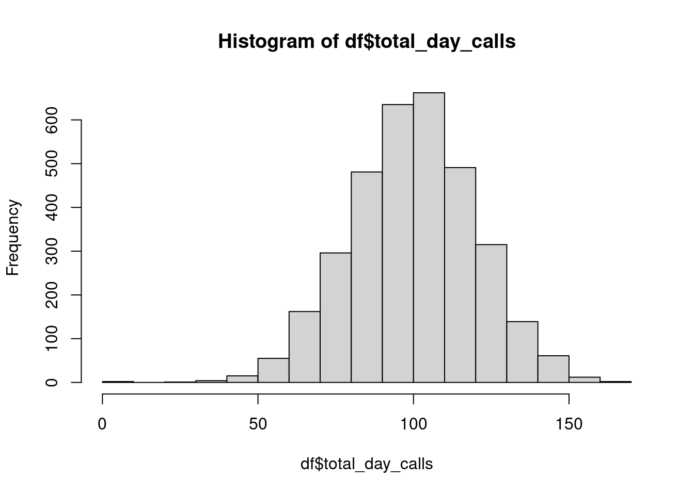
d <- read.csv("https://raw.githubusercontent.com/beduExpert/Programacion-R-Santander-2022/main/Sesion-03/Data/distribuciones.csv")Ejemplo 1
hist(d$rs)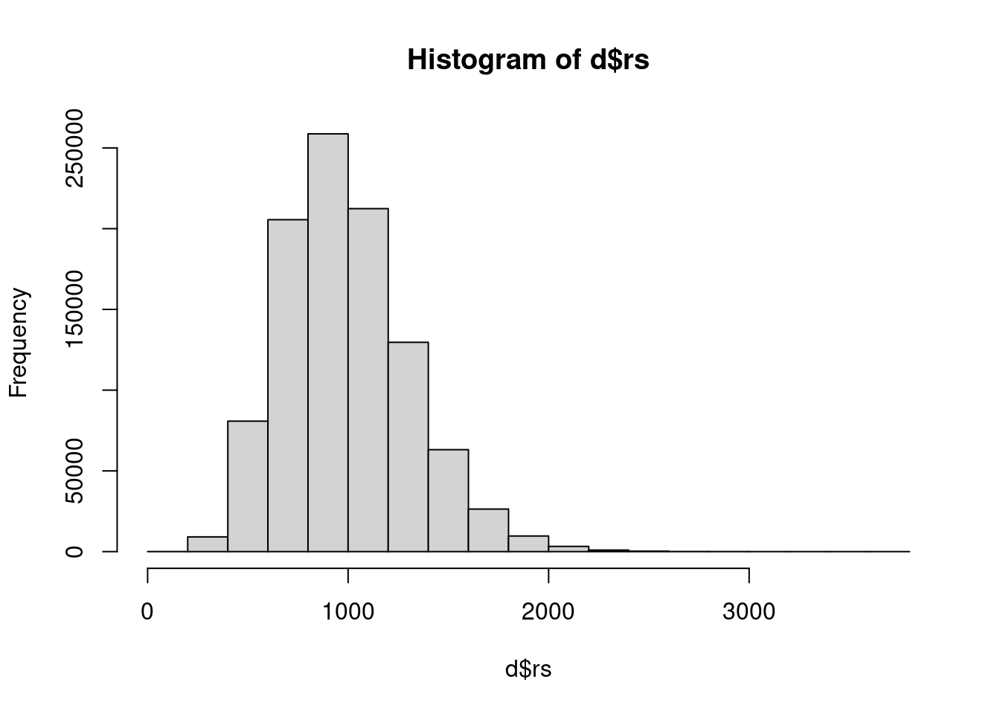
mean(d$rs)[1] 990.3782skewness(d$rs) #s > 0 Sesgo a la derecha[1] 0.6337439kurtosis(d$rs) #Leptocúrtica k > 3[1] 3.613039Ejemplo 2
hist(d$sim)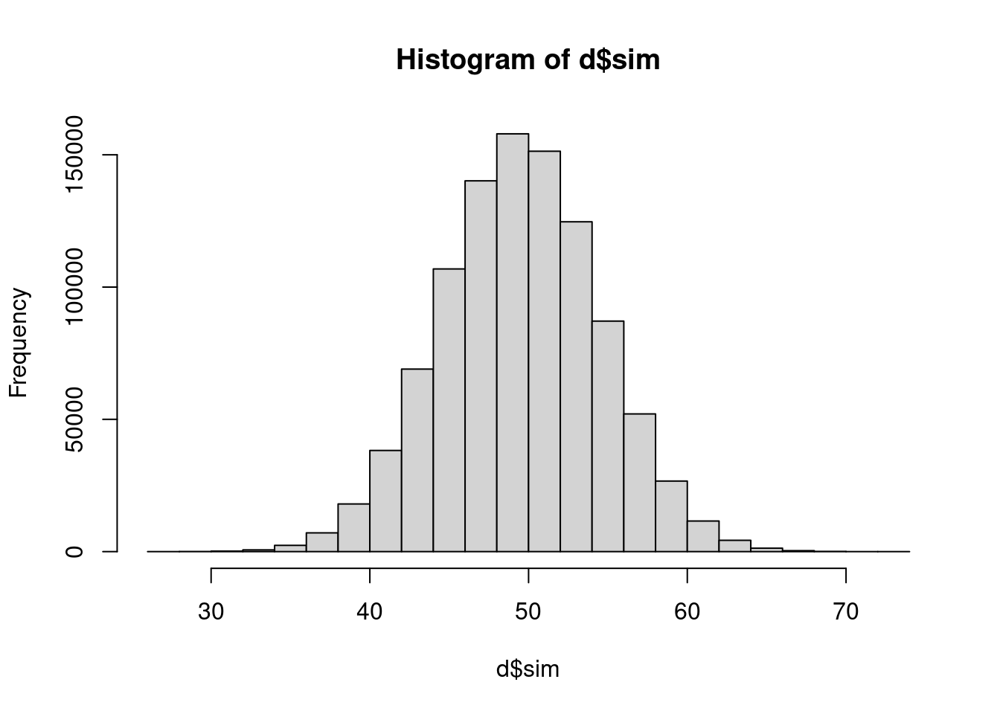
mean(d$sim)[1] 49.99471skewness(d$sim) #s = 0 Simétrica[1] 0.001668343kurtosis(d$sim) #Mesocúrtica k = 3[1] 2.979964#Platocúrtica k < 3Ejemplo 3
hist(d$ls)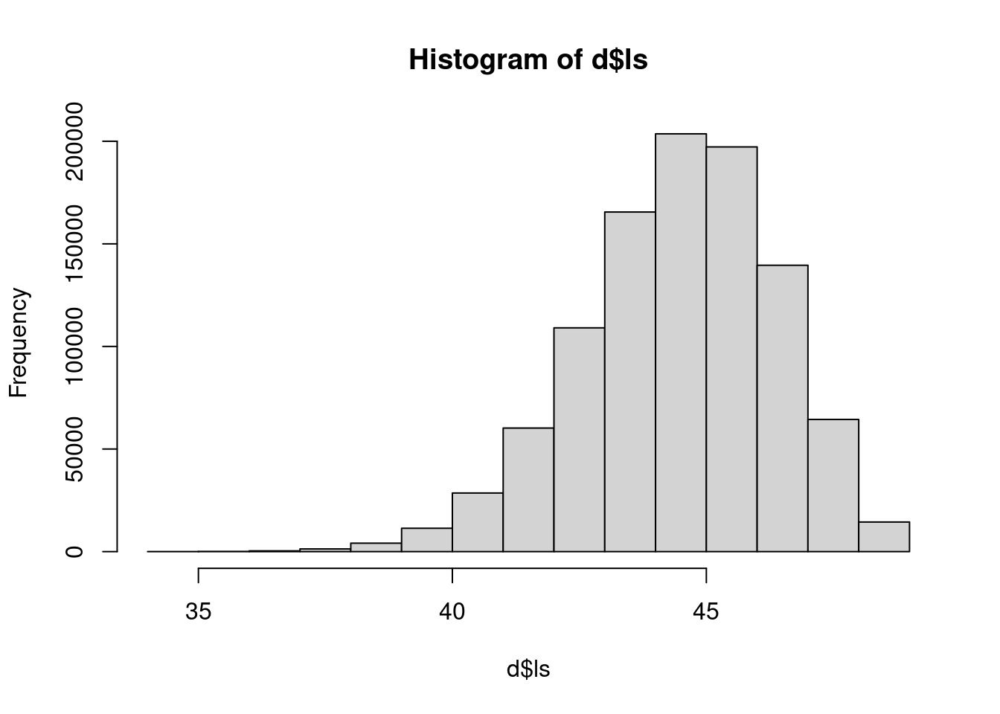
mean(d$ls);sd(d$ls);var(d$ls)[1] 44.95379[1] 1.922957[1] 3.697765skewness(d$ls) #s < 0 Sesgo a la izquierda[1] -0.4308362kurtosis(d$ls) [1] 3.142556var <- read.csv("https://raw.githubusercontent.com/beduExpert/Programacion-R-Santander-2022/main/Sesion-03/Data/variables.csv")Un histograma es una gráfica de barras en donde el eje horizontal representa los intervalos de cases y el eje vertical representa frecuencias (absolutas o porcentuales)
ac = (max(var$INGRESO)-min(var$INGRESO))/4
bins <- seq(min(var$INGRESO), max(var$INGRESO), by = ac)
bins[1] 1809.980 2099.805 2389.630 2679.455 2969.280hist(var$INGRESO, breaks = bins, main = "Histograma Ingreso")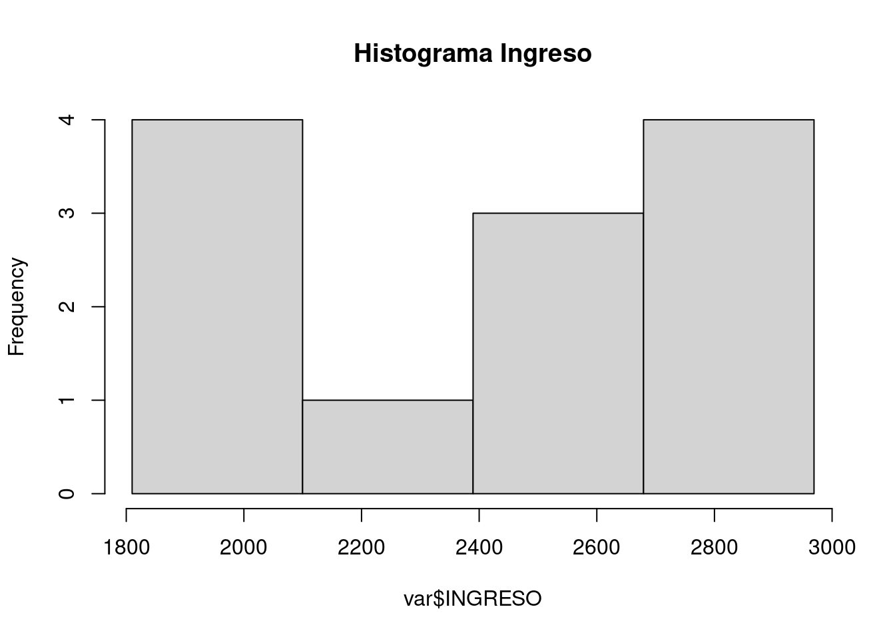
hist(var$INGRESO,main = "Histograma Ingreso")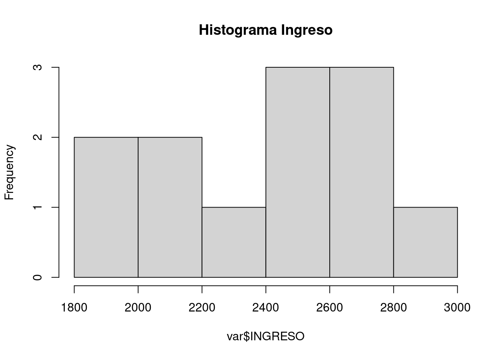
my_hist <- hist(var$INGRESO,
breaks = bins,
main = "Histograma",
xlab = "Ingreso")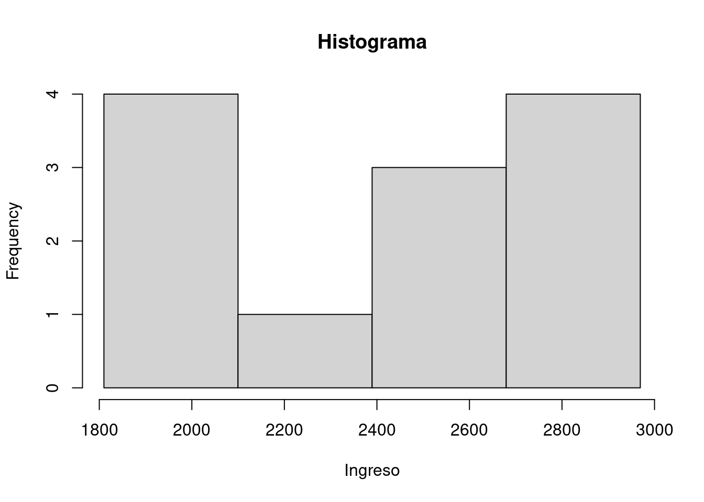
my_hist$breaks
[1] 1809.980 2099.805 2389.630 2679.455 2969.280
$counts
[1] 4 1 3 4
$density
[1] 0.0011501193 0.0002875298 0.0008625895 0.0011501193
$mids
[1] 1954.893 2244.718 2534.543 2824.368
$xname
[1] "var$INGRESO"
$equidist
[1] TRUE
attr(,"class")
[1] "histogram"frecuencia acumulada
my_hist$counts <- cumsum(my_hist$counts)
plot(my_hist, main = "Histograma acumulado", xlab = "Ingreso")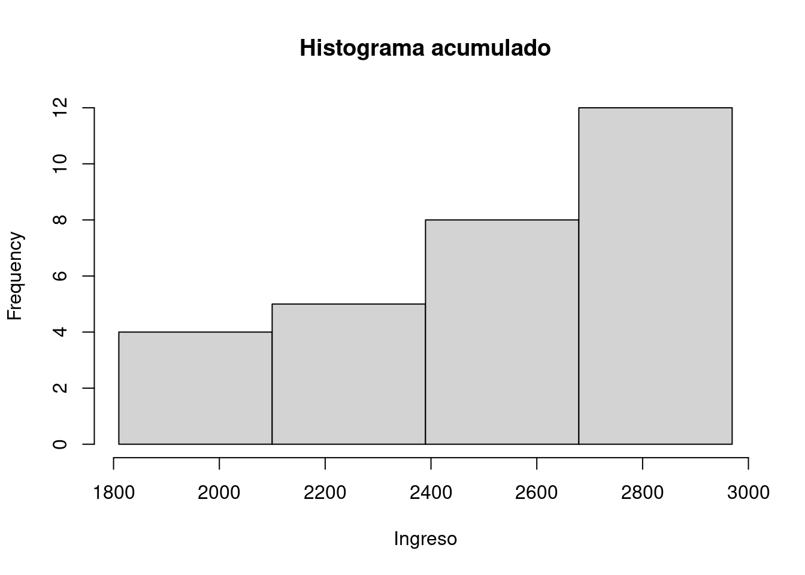
ggplot(var, aes(INGRESO)) +
geom_histogram(bins = 4) +
labs(title = "Histograma",
x = "Ingreso",
y = "Frequency") +
theme_classic()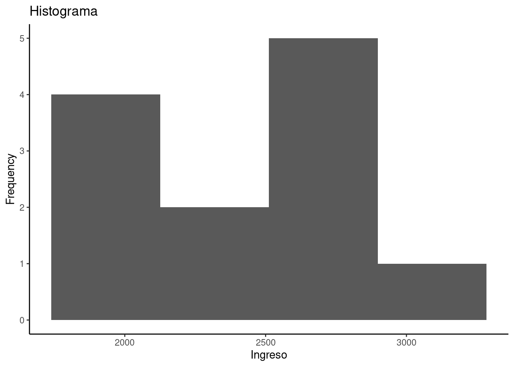
ggplot(var, aes(INGRESO)) +
geom_histogram(aes(y = cumsum(..count..)), bins = 4) +
labs(title = "Histograma acumulado",
x = "Ingreso",
y = "Frequency") +
theme_classic()Warning: The dot-dot notation (`..count..`) was deprecated in ggplot2 3.4.0.
ℹ Please use `after_stat(count)` instead.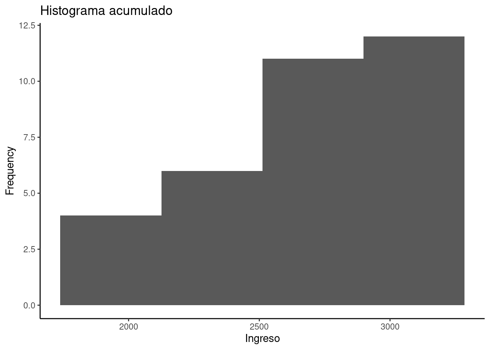
Los histogramas nos ayudan a conocer la distribución de la variable, la cual junto con su forma, nos ayuda a entender el comportamiento de los datos.
Los histogramas pueden ser simétricos. Lo que implica que su moda, media y mediana son aproximadamente iguales:”
d <- read.csv("https://raw.githubusercontent.com/beduExpert/Programacion-R-Santander-2022/main/Sesion-03/Data/distribuciones.csv")hist(d$sim, main = "Distribución simétrica")Mode(d$sim)[1]; median(d$sim); mean(d$sim)[1] 50[1] 50[1] 49.99471hist(d$rs, main = "Distribución con sesgo a la derecha")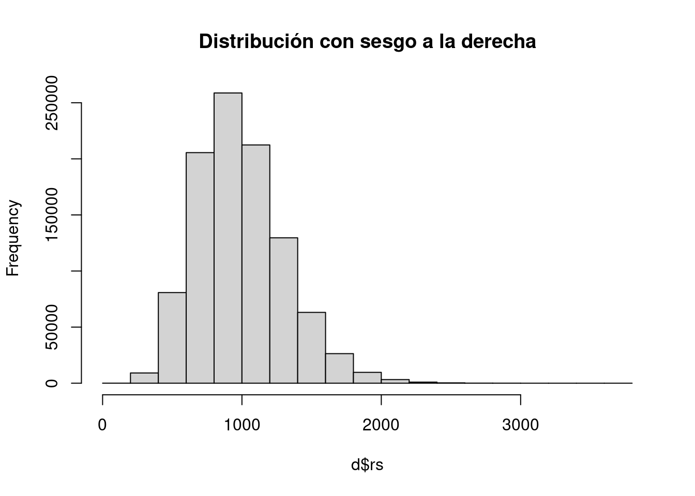
Mode(d$rs)[1]; median(d$rs); mean(d$rs)[1] 924[1] 958[1] 990.3782hist(d$ls, main = "Distribución con sesgo a la izquierda")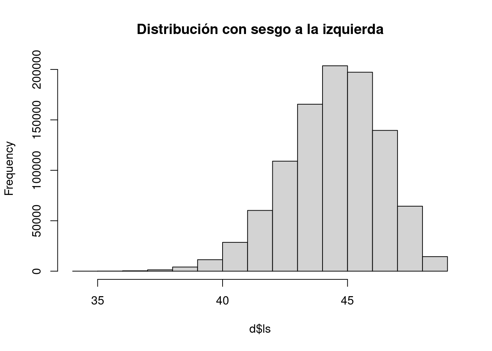
Mode(d$ls)[1]; median(d$ls); mean(d$ls)[1] 45[1] 45[1] 44.95379Otra método gráfica para visulizar la distribución de una variable es a través de diagramas de caja y brazo, los cuales se basan en los cuartiles de la distribución y en su rango intercuartílico para mostrar datos extremos o atípicos.”
boxplot(d$sim, horizontal = TRUE)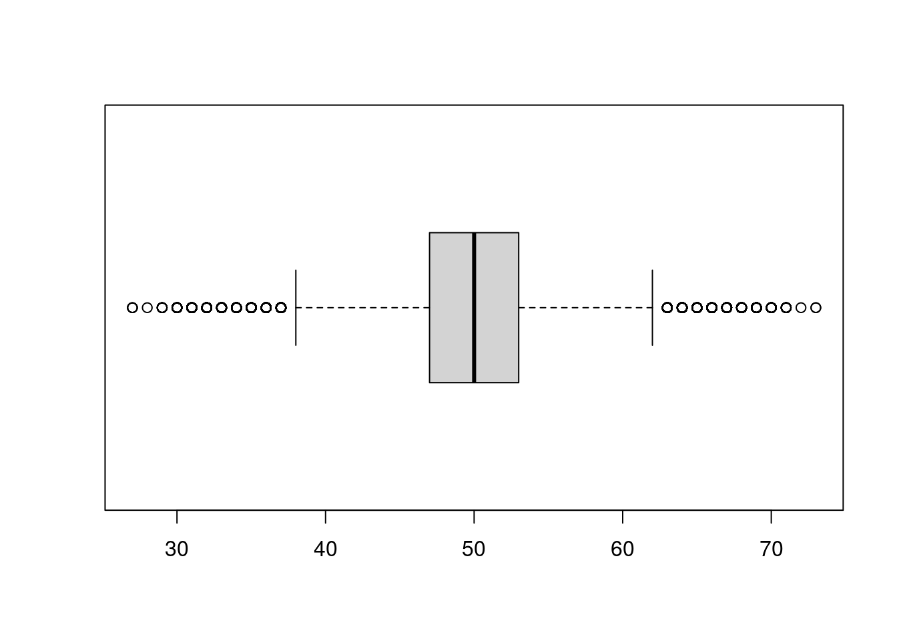
boxplot(d$rs, horizontal = TRUE)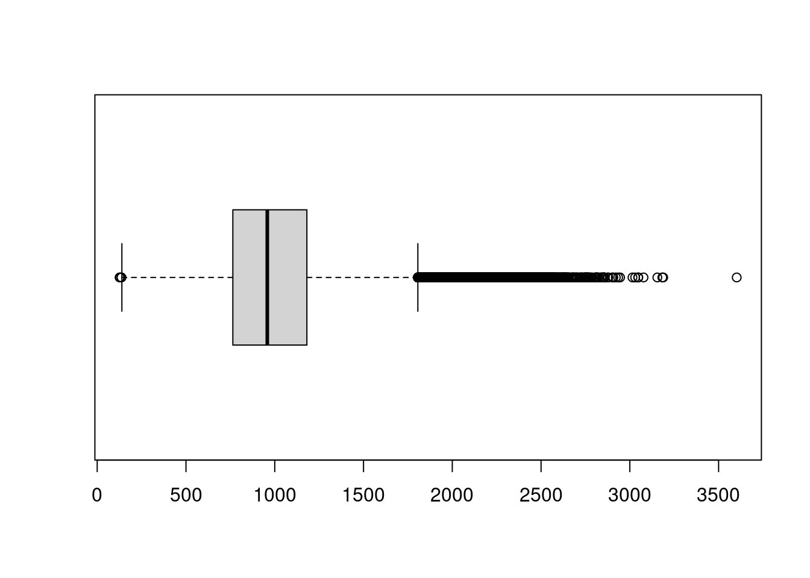
boxplot(d$ls, horizontal = TRUE)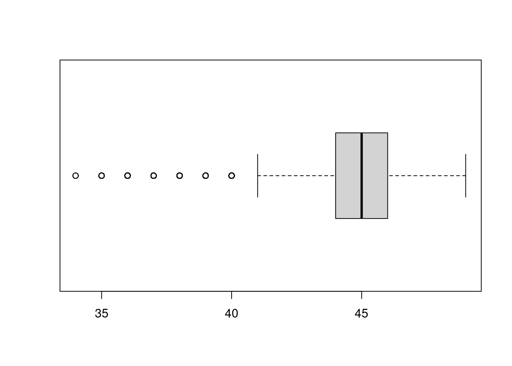
df <- diamonds
cor(df$table, df$price)[1] 0.1271339df.select <- select(df, price, carat, depth, table)
corr_matrix <- round(cor(df.select),4)
corr_matrix price carat depth table
price 1.0000 0.9216 -0.0106 0.1271
carat 0.9216 1.0000 0.0282 0.1816
depth -0.0106 0.0282 1.0000 -0.2958
table 0.1271 0.1816 -0.2958 1.0000## Gráfica de dispersión
ggplot(df, aes(x=carat, y=price)) +
geom_point() +
stat_smooth(method = "lm",
formula = y ~ x,
se = TRUE,
geom = "smooth") +
labs(title = "Gráfica de dispersión",
x = "Carat",
y = "Price") +
theme_classic()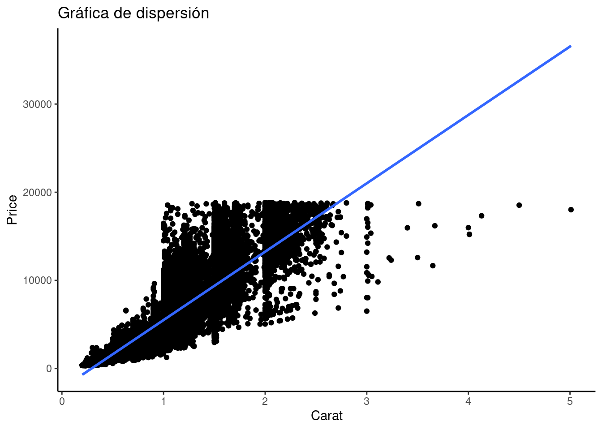
hist(df$price, breaks = "Sturges")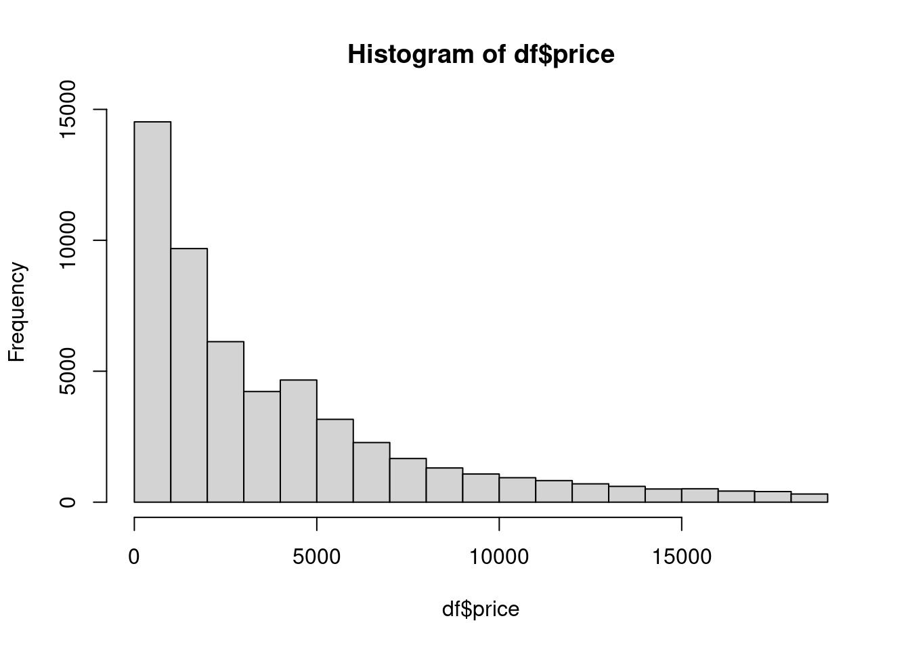
df %>% group_by(cut) %>%
summarise(n=n(),
price = mean(price)) %>%
mutate(freq = round(100*n/sum(n),1))# A tibble: 5 × 4
cut n price freq
<ord> <int> <dbl> <dbl>
1 Fair 1610 4359. 3
2 Good 4906 3929. 9.1
3 Very Good 12082 3982. 22.4
4 Premium 13791 4584. 25.6
5 Ideal 21551 3458. 40